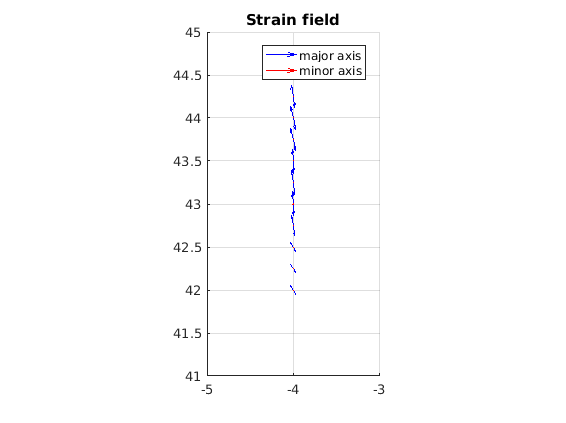

Contents
% compute strain field from deformaion clc close all
Lat 43:49 Long -4:18
Vel = V_pred_2;
Lat1 = LatGrid; Long1 = LongGrid; Lat2 = zeros(size(Lat1)); Long2 = zeros(size(Long1)); for i = 1:length(Lat1) Lat2(i) = Lat1(i) + km2deg(V_pred_2(i,1)/1000); Long2(i) = Long1(i) + km2deg(V_pred_2(i,2)/1000, 6378*cosd(Lat1(i)) ); end dx = Long2 - Long1; % [deg] dy = Lat2 - Lat1 ; % [deg]
Deformation tensor F
clc for i = 1:10 % length(Lat1) fxx = (Lat2(i) - Lat1(i)) /Lat1(i); fyy = (Long2(i) - Long1(i)) / Long1(1); fyx = dx(i) / (Lat1(i) + dy(i)); fxy = dy(i) / (Long1(i) + dx(i)); F = [fxx fxy ; fyx, fyy]; if det(F) < 0 disp(['Error: det(F) < 0 !!! , det(F) = ', num2str(det(F))]); end % Rotation matrix R % R = 1/2 * (F - F') w = 1/2 * (fyx - fxy); displacement = deg2km(w, cosd(Lat1(i)))*1000*1000; % disp [mm] % Strain Tensor E, E = 1/2*(F + F') = [exx exy; eyx, eyy E = [fxx fxy+w ; fyx-w, fyy]; exx = E(1,1); eyy = E(2,2); exy = E(1,2); % = eyx % HauptStrains (lambda1 labmbda2) % [exx-L1, exy ; % eyx, eyy-L2 ] % solve ax^2 + bx +c = 0 a = 1; b = - exx - eyy; c = exx*eyy - exy^2; L1 = ( -b + sqrt(b^2 + 4*a*c)) / 2*a; L2 = ( -b - sqrt(b^2 + 4*a*c)) / 2*a; % % check, OK % e1 = sqrt( (exx - eyy)^2 + 4*exy^2 ); % L1c = 1/2 * (exx + eyy + e1); % L2c = 1/2 * (exx + eyy - e1); % Omega, Eigenwert Omega1 = atand( -(exx - L1) / exy ); % Omega2 = atand( -(exy) / (eyy - L1) ); % omega1 + omega2 = 90 deg ! Omega1c = atand( (2*exy) / (exx - eyy) ) / 2 ; % ERROR, Omega1c ~= Omega1 Strain(i,:) = [Omega1, L1, L2]; end Strain
Error: det(F) < 0 !!! , det(F) = -9.7335e-31 Strain = -63.818894610766201 0.000000000565954 0.000000000070916 -62.438027188003836 0.000000000553967 0.000000000079550 -60.885548530105169 0.000000000537159 0.000000000089105 -81.403308822136196 0.000000001171326 0.000000000003701 -87.461579881057133 0.000000001314553 0.000000000003148 -84.960598604955493 0.000000001366975 0.000000000000025 -85.119664001158824 0.000000001363370 0.000000000000058 -78.029389040939606 0.000000001339529 0.000000000017969 -78.814623862528634 0.000000001316345 0.000000000013964 -79.669023430899941 0.000000001293071 0.000000000010234
plotStrain(Strain, Long1(1:length(Strain)), Lat1(1:length(Strain)), 100*1000*1000);